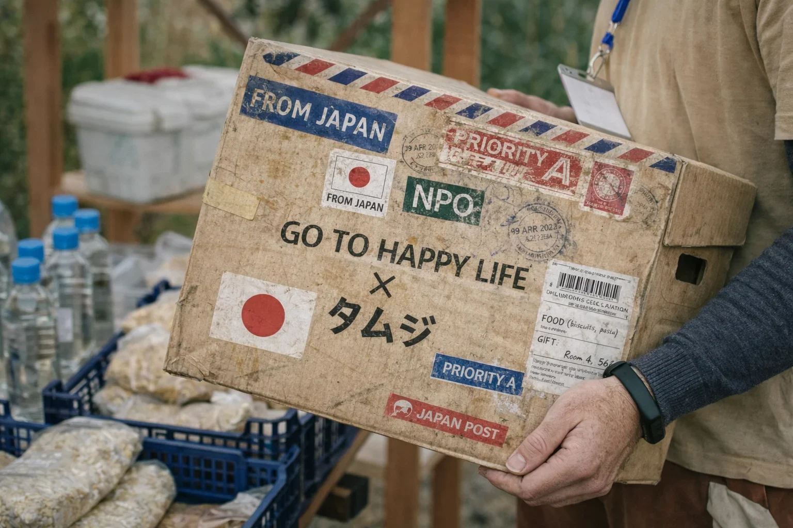

| 名称 | 特定非営利活動法人 GO TO HAPPY LIFE（旧名称：日本在宅看護普及会） |
|---|---|
| 役員 | 後藤 栄子（理事長） / 後藤 基温（理事） / 伊藤 晋（理事） / 大下 甚（監事） |
| 設立 | 平成11年（1999年）9月 |
| 事業内容 | 医療と福祉を軸に、制度の外で困っている人のための活動 |
Role公益、事業、現場。
公益、事業、現場。
役割を分けて前に進める。
社会課題の解決には、公益、事業、現場、それぞれの役割があります。GO TO HAPPY LIFE はその中心でプロジェクトを前に進めるNPOです。
- 寄付を受け取り、公益的に管理する
- パートナーと連携してプロジェクトを組み立てる
- 現場の実行パートナーと実装までつなぐ

Positionすべてを救えるとは言わない。
すべてを救えるとは言わない。
でも、目の前から逃げない。
私たちは万能ではありません。けれど、制度の外で困っている人がいる現実から目をそらさず、医療と福祉の間にある空白に向き合い続けます。